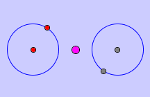
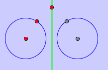

Reflect an object with respect to a line axis or a point.
First use mouse to select an object. Then choose a point or a line. The reflection of the object is drawn.
(1) Reflect elements with respect to a point.

(2) Reflect elements with respect to a point.

Â
JGEX Help